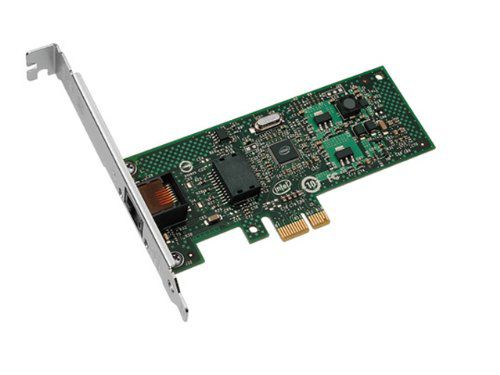

Материнские платы и сетевая карта
Ну тут все достаточно понятно, я подобрал две оптимальные материнские платы, на которых в теорий можно занятся НЕ БОЛЬШИМ разгоном.
Важная инфа
По желанию можно купить сетевую карту. Именно сетевая карта позволяет тебе использовать беспроводной доступ в интернет. Это означает, что тебе не придется искать место вблизи разъема rj-45.
